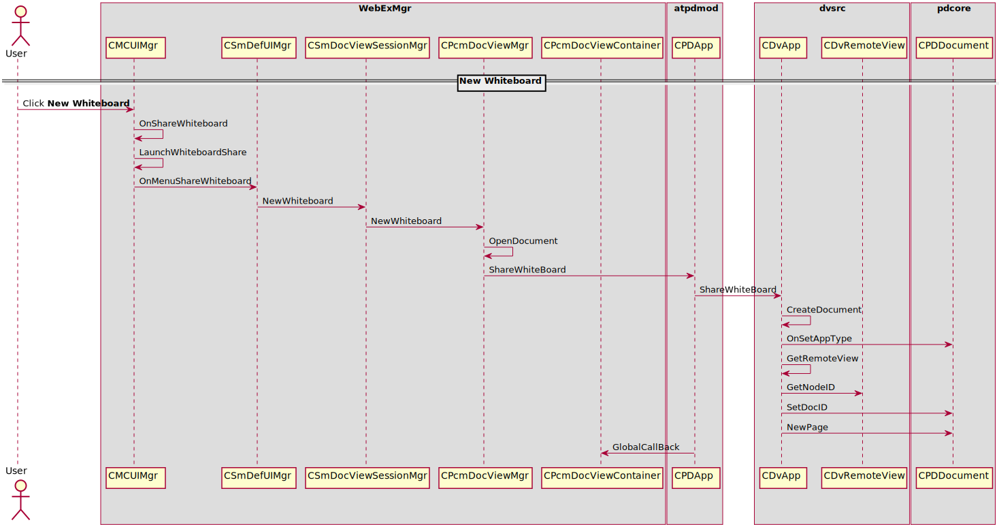

PD Whiteboard¶
How to new a whiteboard¶
Sequence for new whiteboard
Reference¶
atpdmod.dll
- \020p\src\windows\pdmod\pdmod.vcxproj
- Dependencies: dvsrc.lib, pdcore.lib
dvsrc.lib
\020p\src\common\dvsrc\dvsrc.vcxproj
pdcore.lib
\020p\src\common\wpdf\pdcore\pdcore.vcxproj
atdocvu.dll
\
UI relevant class
- CPfwControlAutoSizeBtn
- CPcmPdTabCtrlEx
- CPcmDocViewMgr
- CMCDocViewSessionMgr
- CMCServiceMgr
CpfwPdEventSink::OnProcessPDCommand
IPDUIEvent
CMCPDUMgr::SendPrivilegeChangePDU
CMCPrivilegeDlg::OnCommand
CMCPrivilegeDlg::RefreshPresenterPrivilege
PD Toolbar
- Toolbar Save
- CPcmDocViewMgr EnableAnnoSaveButton
- PD_COMMAND_TOOLBAR_SAVE
- Allow annotation
- CPfwPdProxy::ProcessCommand
- PD_COMMAND_TOOLBAR_ALLOW_TO_ANNOTATE_USER
- CMCDocViewSessionMgr::PrepareAllow2AnnotationUsers